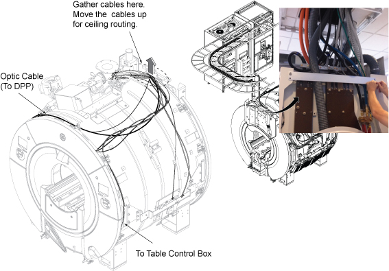
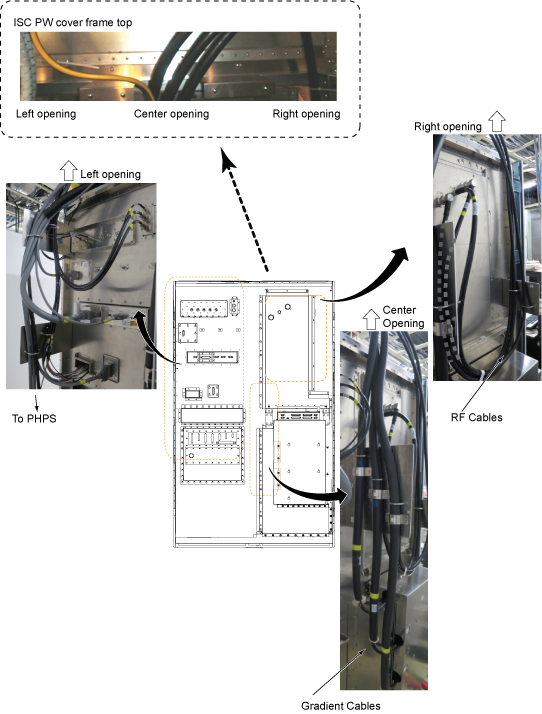
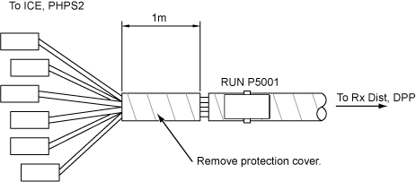
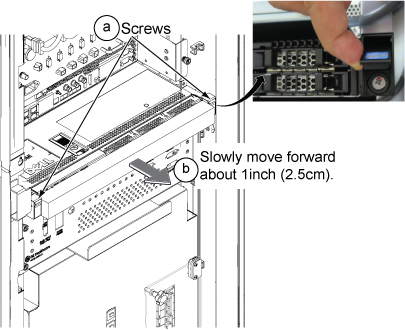
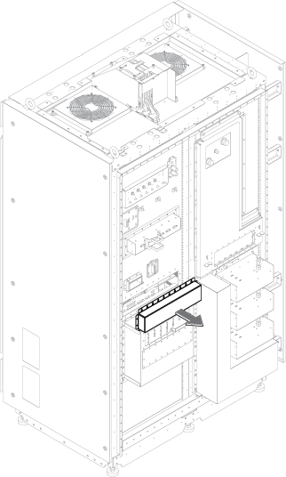
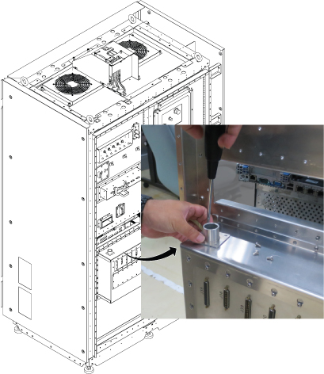
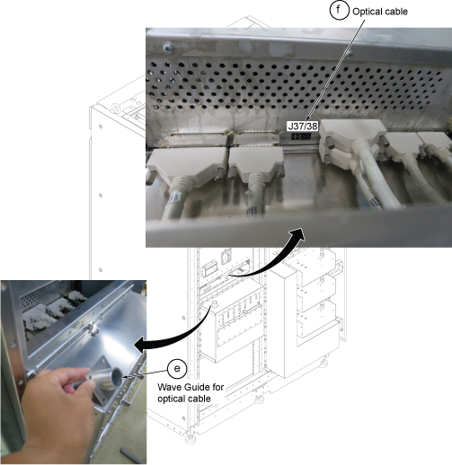

- Object ID: 00000018WIA30410B40GYZ
- Topic ID: id_2016571 Version: 1.62
- Date: Aug 11, 2025 9:52:43 PM
Installing cables in the magnet room
Installation of Integrated System Cabinet (ISC) cables
Procedure
- Make sure the cables are already routed.
Figure 1. Magnet room cable routing 
- Route and clamp the cables for ISC.
Figure 2. ISC cable routing 
- For P5001 cable harness at ISC side, there is a 1m length of protection cover for shipment. Remove this cover.
Figure 3. Protection cover removal 
- Optical cable (P2011) to PHPS 2 J37/38 to PHPS 2.
- Loosen 2 captive screws under the screw cover of ICN.Note This step is needed to make cable access space at rear side.
- Slowly move forward the ICN approximately 1 inch (2.5 cm) not to force the rear cable.
Figure 4. ICN 
- At magnet room side, remove ICN rear access cover by loosening the screws.
Figure 5. ICN rear access cover 
- Remove four screws at wave guide.
Figure 6. Wave guide 
- Tilt the wave guide and route optical cable (P2011) through wave guide
- Connect optical cable (P2011) to PHPS2 J37/38.Note If the space is too narrow, the ICN can be moved forward.
Figure 7. PHPS optical cable 
- Restore the wave guide, ICN rear access cover, and ICN front screws.
- Loosen 2 captive screws under the screw cover of ICN.
- Install the cables to ISC by referring to cable map.
Figure 8. ISC wiring 1 DD Filter 2 Exciter 3 RF panel. - M1350 and M1351 are body
- M1305 is head
4 Gradient filter X, Y, and Z 5 PHPS rear panel 6 ICE (to Front) 7 PW Filter